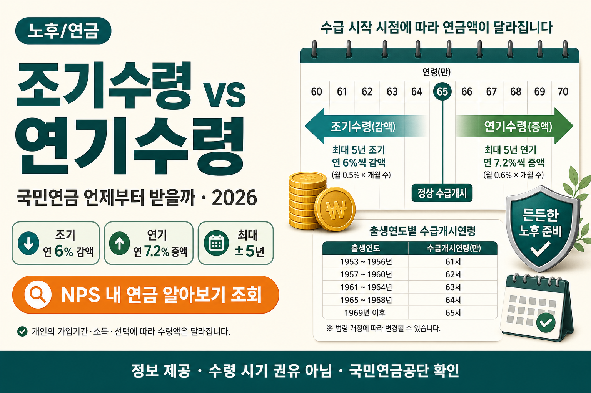

국민연금 언제부터 받는 게 이득일까 — 조기수령 vs 연기수령 완벽 비교 (2026)
감액 6%/년, 증액 7.2%/년. 숫자는 공식 기준으로, 선택은 본인 상황으로

은퇴가 보이기 시작하면 거의 같은 질문이 나옵니다. “국민연금, 언제부터 받는 게 이득일까?” 생산관리 월급쟁이인 저도 선배·부모님 세대에서 이 이야기를 자주 듣습니다. 일찍 받으면 당장 숨이 트이고, 늦게 받으면 매달 금액이 커집니다. 오늘은 그 둘을 조기노령연금(조기수령)과 연기연금(연기수령)으로 나눠, 확정된 비율만 가지고 초보 눈높이로 비교해 보겠습니다.
먼저 읽어주세요
본 글은 정보 제공이며 수령 시기 권유·재무 자문이 아닙니다. 손익분기점·수령총액 계산은 예시일 뿐이며, 개인 가입이력·물가상승률·건강·소득에 따라 달라집니다. 정확한 예상연금액은 국민연금공단(NPS) ‘내 연금 알아보기’에서 조회하세요. 결정은 본인 상황과 전문가 상담 후에 하시는 편이 안전합니다.
- 출생연도별 정상 수급개시연령을 표로 정리합니다.
- 조기수령 감액(1년 6%, 최대 30%)과 연기수령 증액(1년 7.2%, 최대 36%)을 공식 기준으로 통일합니다.
- 어느 쪽이 무조건 유리하다고 단정하지 않고, 상황별 판단 요소만 제시합니다.
1. 국민연금, 언제부터 받지? — 누구나 하는 고민
월급이 끊기는 시점이 다가오면, 통장에 들어오는 고정 수입이 얼마나 남느냐가 실감이 납니다. 국민연금은 그 고정 수입의 한 축입니다. 그런데 “만 나이 되면 자동으로 나온다”만 알고 계시면, 앞당길 수 있다는 사실과 늦출 수 있다는 사실이 한꺼번에 밀려옵니다. 카톡에는 “무조건 빨리 받아라”, “무조건 늦게 받아라”가 섞여 있습니다. 둘 다 단정입니다. 이 글은 그 단정을 피하고, 규칙부터 맞추겠습니다.
제가 현장에서 잔뼈가 굵은 생산관리 직장인으로서 느끼는 건, 숫자보다 먼저 필요한 게 “내 달력”이라는 점입니다. 내 출생연도의 정상 수급개시연령이 몇 살인지, 지금 소득이 있는지, 당장 생활비가 빠듯한지가 먼저입니다. 그다음에야 감액·증액 비율이 의미가 있습니다. 비율만 외우고 삶을 끼워 맞추면, 나중에 후회하기 쉽습니다.
노후 현금흐름은 국민연금만으로 끝나지 않습니다. 집이 있으신 분은 주택연금 조건·수령액 총정리도 같이 보시면 “집과 연금, 어느 쪽을 먼저 손댈지” 시야가 넓어집니다. 세후 월급 감을 잡고 싶으시면 월급 실수령액 계산기로 현재 현금흐름을 한 번 적어 보는 것도 도움이 됩니다. 오늘은 그중에서도 국민연금의 수령 시기만 깊게 보겠습니다.
2. 기본 개념 — 정상 수급개시연령, 왜 시기 선택이 중요한가
국민연금을 “정상적으로” 받기 시작하는 나이를 수급개시연령이라고 합니다. 이 나이는 출생연도에 따라 다릅니다. 아래는 공식으로 안내되는 출생연도별 기준입니다.
| 출생연도 | 수급개시연령 |
|---|---|
| 1953~1956년생 | 만 61세 |
| 1957~1960년생 | 만 62세 |
| 1961~1964년생 | 만 63세 |
| 1965~1968년생 | 만 64세 |
| 1969년생 이후 | 만 65세 |
※ 정상 수급개시연령. 조기·연기는 이 나이를 기준으로 최대 5년까지 앞당기거나 늦춥니다. 최신 기준은 국민연금공단(NPS) 확인.
왜 시기가 중요할까요. 한 번 조기수령을 신청해 앞당기면, 그 감액률이 평생 유지됩니다. 한 번 연기해 늘린 금액도 평생 유지됩니다. “올해만 조금 다르게”가 아니라, 매달 통장에 찍히는 금액의 기본값이 바뀌는 선택입니다. 그래서 친구 말보다 내 개시연령·내 예상액을 먼저 보는 편이 안전합니다.
2026년에는 기존 수급자의 기본연금액이 물가상승을 반영해 2.1% 인상되는 재평가 조정이 있습니다. 이미 받고 계신 분들의 연금액이 물가에 맞춰 조금 오르는 조정입니다. 조기·연기 비율(6%, 7.2%)과는 별개이니, 두 숫자를 섞어 읽지 마세요. 내 예상액의 출발점은 언제나 NPS 조회입니다.
시기 선택이 중요한 이유는 한 가지 더 있습니다. 국민연금은 “한 번 크게 받는 목돈”이 아니라, 살아 있는 동안 매달 이어지는 흐름입니다. 그래서 시작 시점과 매달 금액이 함께 움직입니다. 일찍 시작하면 받는 달이 늘고, 늦게 시작하면 한 달 금액이 커집니다. 어느 쪽이 맞는지가 아니라, 우리 집 생활비가 어느 쪽에 더 잘 맞는지가 핵심입니다. 월급이 아직 있다면 연봉·실수령액 계산기로 세후 현금을 먼저 적어 두세요. 연금 공백이 몇 달인지가 보이면, 조기·연기 이야기가 훨씬 구체가 됩니다.
1969년생 이후는 정상 개시가 만 65세입니다. 조기를 최대로 쓰면 그보다 최대 5년 앞, 연기를 최대로 쓰면 그보다 최대 5년 뒤입니다. 출생연도가 다르면 그 “기준점” 자체가 다르니, 옆집 선배와 나이를 맞춰 비교하면 헷갈립니다. 내 출생연도부터 표를 읽고, 그다음에 조기·연기를 얹으세요.
3. 조기수령이란 — 감액률, 신청 요건, 장단점
조기노령연금은 정상 수급개시연령보다 최대 5년 앞당겨 받는 제도입니다. 감액은 1년 일찍당 6%(월 0.5%)입니다. 최대 5년 앞당기면 30%가 영구 감액됩니다. 한 번 신청해 앞당기면 그 감액률이 평생 유지됩니다. “잠깐 당겨 보고 나중에 원래대로”가 아닙니다.
| 앞당긴 기간 | 감액률 | 남는 비율(예시) |
|---|---|---|
| 1년 | 6% | 94% |
| 2년 | 12% | 88% |
| 3년 | 18% | 82% |
| 4년 | 24% | 76% |
| 5년 | 30% | 70% |
※ 1년 6%(월 0.5%), 최대 5년 30% 영구 감액. 남는 비율은 이해를 돕는 계산이며 실제 연금액은 NPS 조회 필수.
신청 요건은 가입기간 10년 이상이고, 소득이 일정 기준(A값) 이하여야 합니다. A값의 구체 금액은 해마다 달라질 수 있으니, 이 글에서는 숫자를 지어내지 않습니다. “일을 하면서도 무조건 조기수령이 된다”고 단정하지 마시고, 소득 기준은 NPS에 확인하세요.
장점은 분명합니다. 당장 현금흐름이 생깁니다. 퇴직 후 공백, 병원비, 생활비가 급할 때 “늦게 더 받는 이론”보다 “오늘 통장에 들어오는 돈”이 더 절실할 수 있습니다. 단점은 매달 금액이 줄어든 채로 고정된다는 점입니다. 1년을 당기면 6%, 3년이면 18%, 5년이면 30%가 빠집니다. 월 단위로는 0.5%씩이니 “한두 달만” 당긴다고 해서 비율이 사라지지는 않습니다. 신청 전에 NPS에서 가입기간 10년과 소득(A값) 기준을 꼭 확인하세요. 오래 살수록 정상수령·연기수령과 비교한 총액에서 뒤처질 수 있습니다. 건강·기대수명은 누구도 장담할 수 없으니, 총액만으로 밀어붙이지 마세요.
조기수령 체크 메모
- 내 출생연도의 정상 개시연령을 먼저 적으세요.
- 몇 년을 당길지(1~5년)에 따라 6%씩 곱해 감을 잡으세요.
- 가입기간 10년·소득(A값) 요건은 NPS에서 확인하세요.
- 한 번 정하면 감액이 평생 간다는 점을 가족과 공유하세요.
4. 연기수령이란 — 증액률, 부분연기, 장단점
연기연금은 정상 수급개시연령 이후 최대 5년 늦춰 받는 제도입니다. 증액은 1년 늦출 때마다 7.2%(월 0.6%)입니다. 최대 5년 늦추면 36% 증액됩니다. 늦춘 만큼 늘어난 금액이 평생 유지됩니다. 전부 미루지 않고 일부(50~100%)만 연기하는 부분연기도 가능합니다.
| 늦춘 기간 | 증액률 | 받는 비율(예시) |
|---|---|---|
| 1년 | 7.2% | 107.2% |
| 2년 | 14.4% | 114.4% |
| 3년 | 21.6% | 121.6% |
| 4년 | 28.8% | 128.8% |
| 5년 | 36% | 136% |
※ 1년 7.2%(월 0.6%), 최대 5년 36% 증액. 받는 비율은 이해를 돕는 계산이며 실제 연금액은 NPS 조회 필수.
장점은 매달 금액이 커진다는 점입니다. 다른 소득(근로·임대·배우자 소득)이 있어 당장은 버틸 수 있고, 건강이 괜찮아 오래 받을 가능성이 높다고 스스로 판단하면 연기가 후보가 됩니다. 재직 중이라 연금액이 일부 줄어드는 구간이라면, 연기를 검토하는 분들도 있습니다. 단점은 그 몇 년을 “안 받는 기간”으로 견뎌야 한다는 점입니다. 늦게 받기 시작해 오래 살지 못하면, 총액 기준으로는 손해를 볼 수 있습니다. 부분연기는 “전부 올인”이 부담스러울 때 중간 선택지로 안내됩니다. 비율(50~100%)은 NPS 상담에서 본인 예상액과 맞춰 보세요.
한 가지 더. 조기는 1년에 6% 줄고, 연기는 1년에 7.2% 늘어납니다. 비율만 보면 연기가 더 커 보입니다. 하지만 “안 받는 기간”의 생활비가 어디서 나오느냐가 빠지면 계산이 공중에 뜹니다. 비율 비교와 가계부 비교를 같이 하세요.
부분연기는 연금액의 일부(50~100%)만 미루는 선택입니다. 전부 미루면 숨이 막히고, 전부 바로 받으면 나중에 금액이 아쉬울 때 중간이 됩니다. 다만 비율을 마음대로 상상해 넣지 마세요. 가능한 범위와 신청 방법은 NPS 안내·상담이 기준입니다. 연기도 한 번 늘린 금액이 평생 유지되니, “나중에 마음 바뀌면 다시”를 전제로 두지 않는 편이 안전합니다.
5. 조기 vs 연기 손익분기점 — 예시로만 보기
손익분기점은 “일찍 적게 받는 총액”과 “제때/늦게 많이 받는 총액”이 엇갈리는 나이를 가리키는 말입니다. 아래는 개념 예시입니다. 실제 분기점은 개인 가입이력·물가상승률·건강·소득에 따라 달라집니다. 정확한 예상연금액은 국민연금공단(NPS) ‘내 연금 알아보기’에서 조회하세요.
| 선택 | 매달 금액 | 받기 시작 | 손익분기 개념(예시) |
|---|---|---|---|
| 조기수령(최대 5년) | 70% (30% 감액) | 최대 5년 앞당김 | 오래 살수록 정상수령이 역전. 대략 70대 후반~80대 초반(예시) |
| 정상수령 | 100% | 출생연도별 개시연령 | 비교의 기준점 |
| 연기수령(최대 5년) | 136% (36% 증액) | 최대 5년 늦춤 | 대략 80대 중반 이후까지 살아야 이득(예시) |
※ 예시일 뿐 개인마다 다릅니다. 참고용이며 수령 시기 권유가 아닙니다.
쉽게 말하면 이렇습니다. 조기수령은 일찍 받는 대신 적게 받습니다. 초반에는 총액이 앞서지만, 오래 살수록 정상수령의 누적이 따라잡아 역전할 수 있습니다. 그 엇갈림이 대략 70대 후반~80대 초반으로 이야기되는 경우가 많습니다. 예시입니다. 연기수령은 늦게 받는 대신 많이 받습니다. 안 받는 기간을 메우고도 남으려면 더 오래 받아야 해서, 대략 80대 중반 이후까지 살아야 이득이라는 식의 예시가 나옵니다. 실제 분기점은 개인마다 다르므로 참고용입니다.
여기서 흔한 실수는 “평균 수명표만 보고 결론 내기”입니다. 평균은 집단의 숫자이고, 내 건강·가족력·생활 습관은 개인입니다. 또 물가가 오르면 나중에 받는 돈의 가치도 달라집니다. 2026년 기존 수급자 기본연금액 2.1% 인상처럼, 연금액은 재평가로 조정되기도 합니다. 그래서 손익분기 나이를 소수점까지 계산해 “정답”처럼 쓰는 글은 경계하는 편이 좋습니다.
숫자로 감을 잡아 보겠습니다. 아래는 이해를 돕는 가상 예시일 뿐, 실제 연금액이 아닙니다. 정상 수급액이 매달 100만 원이라고 가정하면, 5년 조기는 70만 원(30% 감액), 5년 연기는 136만 원(36% 증액)입니다. 조기는 먼저 받기 시작하니 초반 총액이 앞설 수 있고, 오래 받을수록 정상수령이 따라잡을 수 있습니다. 연기는 안 받는 기간이 길어서, 총액이 앞서는 시점이 더 뒤로 밀릴 수 있습니다. 대략 조기는 70대 후반~80대 초반, 연기는 80대 중반 이후라는 이야기는 이런 개념을 쉽게 말하기 위한 예시입니다. 가입이력·물가·건강·소득이 바뀌면 분기점도 바뀝니다. 정확한 예상연금액은 국민연금공단(NPS) ‘내 연금 알아보기’에서 조회하세요.
6. “나는 어떻게?” — 상황별 판단 요소
어느 쪽이 무조건 유리하다고 말할 수 없습니다. 아래는 고려 요소입니다. 권유가 아닙니다.
-
당장 생활비가 필요하고, 건강이 걱정될 때 — 조기 고려
퇴직 후 공백이 크고, 다른 소득이 없다면 “오늘 현금”이 우선일 수 있습니다. 감액이 평생 간다는 점을 알고도, 가계가 버티지 못하면 이론상 최적은 의미가 없습니다. 배우자 연금·퇴직금·주택 현금화 가능 여부도 같이 보세요. 집을 담보로 연금을 받는 선택지는 주택연금 글에서 조건만 참고하세요. -
다른 소득이 있고 건강·장수를 기대할 때 — 연기 고려
근로·사업·임대 소득이 있어 몇 년을 버틸 수 있고, 매달 금액을 키우고 싶다면 연기가 후보입니다. 부분연기(50~100%)로 숨 고르기를 하는 방법도 있습니다. -
재직 중이라 연금액이 줄어드는 구간이면 — 연기 검토
일을 하면서 연금을 받으면 소득 수준에 따라 연금액이 조정되는 경우가 있습니다. 구체 기준은 해마다·개인마다 다르니 숫자를 지어 넣지 않습니다. “받고 싶은데 깎이면 아깝다”면 연기 상담을 NPS에 여쭤보세요.
노후 통장 옆에는 세제·계좌 이야기도 붙습니다. 여유 자금의 세제 틀이 궁금하시면 ISA 세제개편 정리를 현행·개편안 구분해서 읽어 보세요. 국민연금 시기 선택과 ISA는 다른 제도이니, 하나로 섞어 결론 내지는 마세요.
상황별 판단을 한 줄로 다시 적으면 이렇습니다. 당장 생활비가 필요하고 건강이 걱정되면 조기를 후보에 올려 보세요. 다른 소득이 있고 건강·장수를 기대하면 연기를 후보에 올려 보세요. 재직 중이라 연금액이 줄어드는 구간이면 연기를 검토해 보세요. 세 문장 모두 “무조건 하라”가 아니라 “후보로 두라”입니다. 배우자 소득, 퇴직금 사용 계획, 집 담보 현금화 가능 여부까지 같이 보면 선택이 덜 외롭습니다.
7. 흔한 오해 / 주의점
- 한 번 정하면 되돌리기 어렵습니다. 조기수령 감액은 평생 유지됩니다. 연기 증액도 평생 유지됩니다. “시험 삼아”가 아닙니다.
- 감액 6%와 증액 7.2%를 서로 다른 글의 숫자와 섞지 마세요. 자료마다 표현이 달라 헷갈리기 쉽습니다. 이 글은 조기 1년 6%(월 0.5%, 최대 30%), 연기 1년 7.2%(월 0.6%, 최대 36%)로 통일합니다.
- 건강보험료·기초연금 영향도 고려하세요. 연금 수령액·소득 인정액이 바뀌면 건보료나 기초연금 수급에 영향을 줄 수 있습니다. 세부 기준은 공단·지자체 안내가 다르니, 이 글에서 단정하지 않습니다. 상담 때 “연금 시기 바꾸면 건보·기초연금은요?”를 꼭 물어보세요.
- 손익분기 나이를 운명처럼 믿지 마세요. 예시일 뿐입니다. 가입이력·물가·건강·소득에 따라 달라집니다.
- 소득(A값) 요건을 건너뛴 조기 신청은 거절될 수 있습니다. 가입 10년과 소득 기준을 NPS에서 확인하세요.
실무적으로는 서류보다 대화가 먼저인 경우가 많습니다. 배우자·자녀와 “우리가 앞으로 5년 동안 생활비를 어디서 메울지”를 적어 보세요. 그 메모가 있으면 NPS 창구·전문가 상담이 훨씬 짧고 정확해집니다. 예상액은 반드시 ‘내 연금 알아보기’로 본인 숫자를 뽑으세요.
오해를 하나 더 짚겠습니다. “물가가 오르니까 조기든 연기든 결국 같아진다”는 말은 정확하지 않습니다. 2026년 기존 수급자 기본연금액 2.1% 인상은 이미 받는 분들의 재평가 조정입니다. 조기 감액 6%/년, 연기 증액 7.2%/년과는 층이 다릅니다. 물가 조정이 있다고 해서 한 번 정해진 감액·증액 비율이 사라지는 것은 아닙니다. 또 “친구는 61세에 받았다”는 이야기도 출생연도가 다르면 정상 개시 자체가 다릅니다. 1953~1956년생은 만 61세, 1957~1960년생은 만 62세, 1961~1964년생은 만 63세, 1965~1968년생은 만 64세, 1969년생 이후는 만 65세입니다. 내 칸을 먼저 찾고, 그다음 최대 5년 앞·뒤를 계산하세요.
8. 마무리 — 비율은 공식, 선택은 삶
정리하면 이렇습니다. 정상 수급개시연령은 출생연도별로 61~65세입니다. 조기는 최대 5년, 1년 6%, 최대 30% 영구 감액입니다. 연기는 최대 5년, 1년 7.2%, 최대 36% 증액이며 부분연기도 가능합니다. 2026년 기존 수급자 기본연금액은 물가 반영 2.1% 인상입니다. 손익분기 이야기는 예시일 뿐, 정확한 예상연금액은 NPS에서 조회하세요.
어느 쪽이 이득인지는 제가 찍어 드리지 않습니다. 정보로 감을 잡고, 결정은 본인 상황과 상담 후에 하세요. 오늘 표가 가족 대화의 출발점이 되길 바랍니다.
📎 출처·참고
- 국민연금공단(NPS) 조기노령연금·연기연금·수급개시연령 안내
- 조기 감액 1년 6%(월 0.5%, 최대 30%) · 연기 증액 1년 7.2%(월 0.6%, 최대 36%)
- 2026년 기존 수급자 기본연금액 물가 반영 2.1% 인상(재평가 조정)
- 월급 실수령액 계산기 · 주택연금 · ISA 세제개편

본 글은 정보 제공 목적이며 재무·법률·수령 시기 자문이 아닙니다. 조기·연기 손익분기와 수령총액은 예시일 뿐 개인 가입이력·물가상승률·건강·소득에 따라 달라지므로, 정확한 예상연금액은 국민연금공단(NPS) ‘내 연금 알아보기’와 공식 안내로 확인하시기 바랍니다. 결정은 본인 상황·전문가 상담 후 하시기 바랍니다.